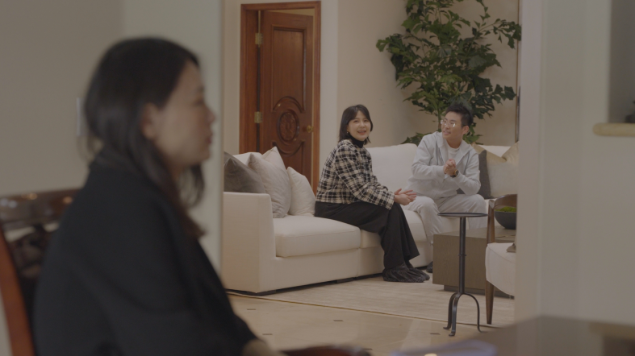
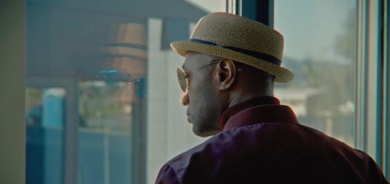
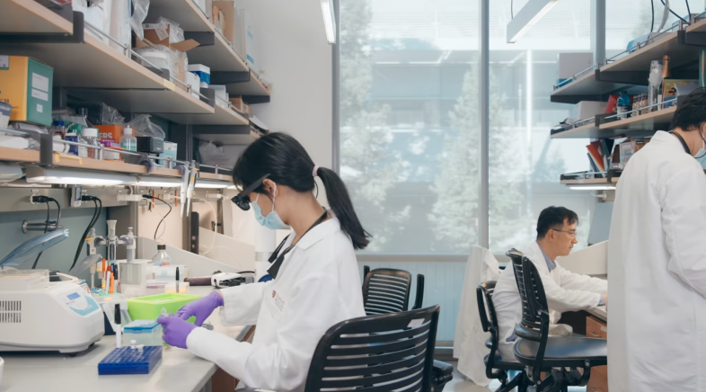
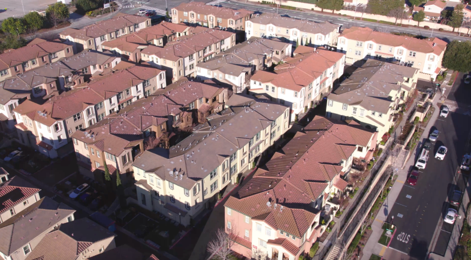
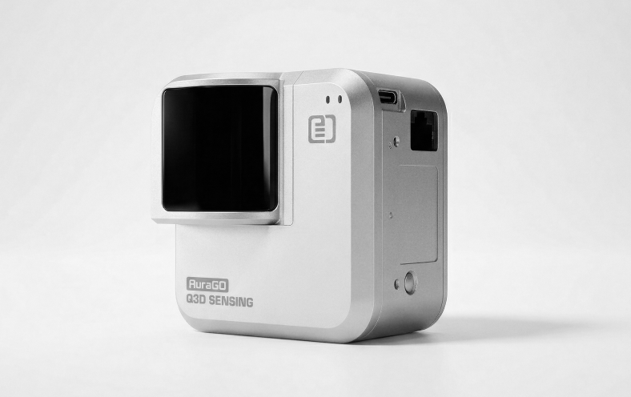
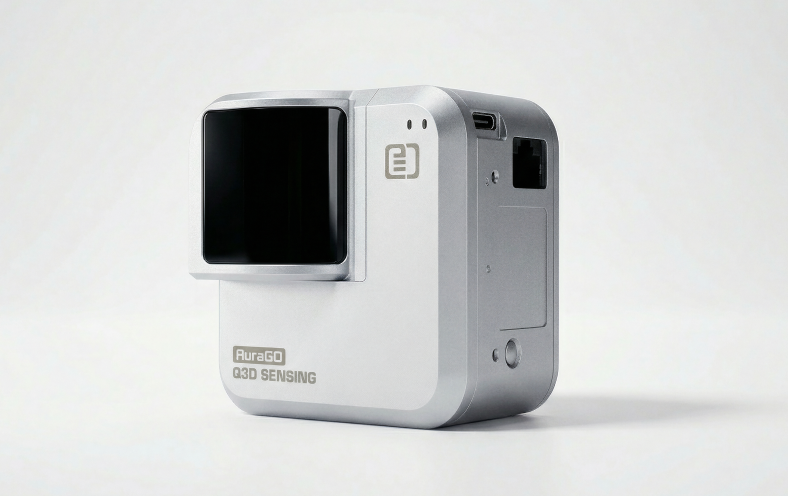
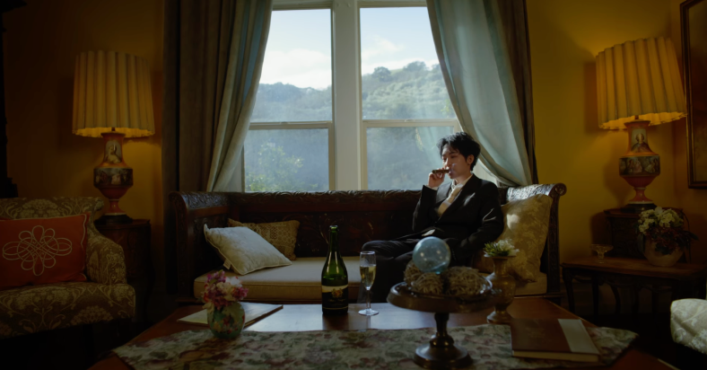

Work
Our work is not made to be quickly scrolled past. It is made to be remembered, saved, and watched again.
Whether the work is founder storytelling, real estate advertising, reality show integration, real estate services, or a private club, we use a documentary approach to build credible brand narratives.


Reality Show
Surviving Silicon Valley
This is a reality show that authentically captures the raw, high-stakes world of life, love, startups, and home-buying — right in the cosmic center of it all: Silicon Valley.

Real estate advertising
What makes a house a home? — Aloe Blacc
A documentary collaboration with Aloe Blacc. After the wildfires that transformed his hometown, the film follows his personal journey to rediscover the meaning of home — beyond structure, into identity and belonging.

Innovation Campaign
Stanford
Professor
Interview
Campaign
In conversation with Lucas, Dr. Cong of Stanford University introduces LabOS — an XR-based human AI system that brings real-time, data-driven intelligence directly into experimental work.

Real Estate Advertising
272 Fountain Grass Ter
Property showcases, neighborhood and city narratives, and lifestyle content — produced in show format to boost watch-through rates and conversion.


Technology Branding
Built for the Real World — Q3D Sensing
AuraGo by Q3D Sensing is a portable LiDAR scanner that brings professional-grade 3D capture to smartphones and tablets, making precise spatial scanning accessible to everyday workflows.

Luxury Brand Film
Wine, Time and Sincerity — Elliston Vineyards
At the Elliston Vineyards, where time moves gently, wine, memory, and human connection unfold with sincerity rather than speed. A winery commercial crafted as a luxury brand film — capturing the heritage, warmth, and quiet elegance of one of the Bay Area's most storied vineyards.